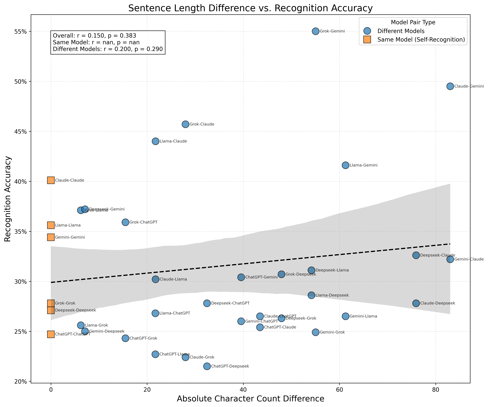
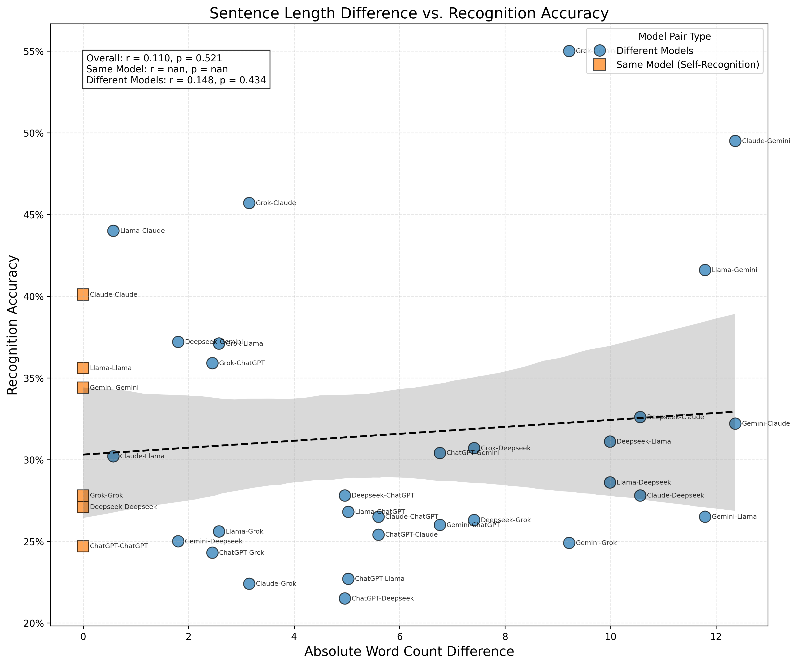
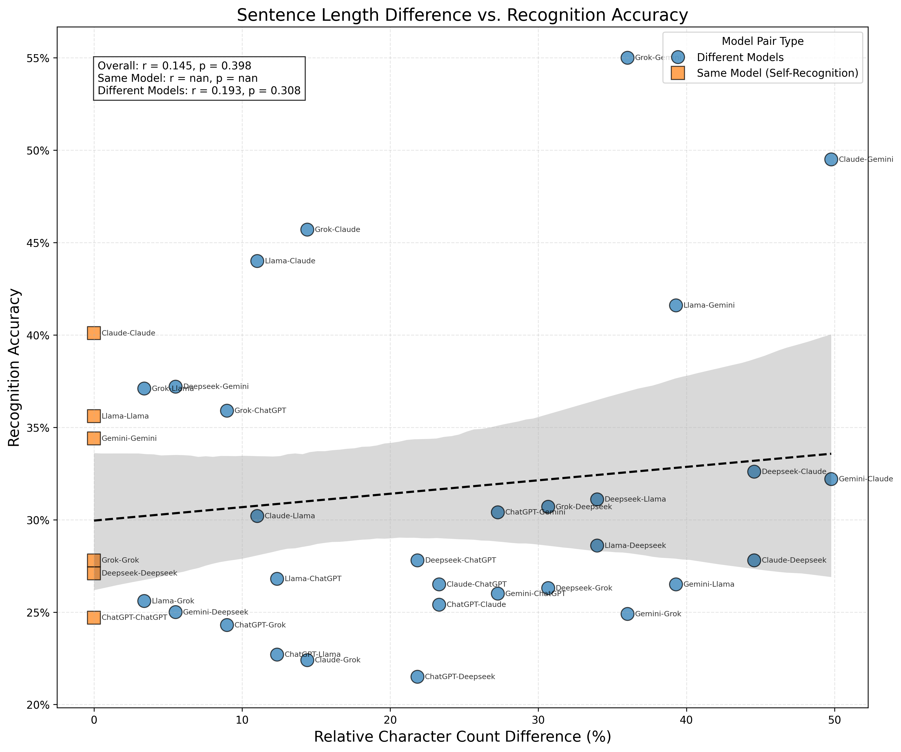
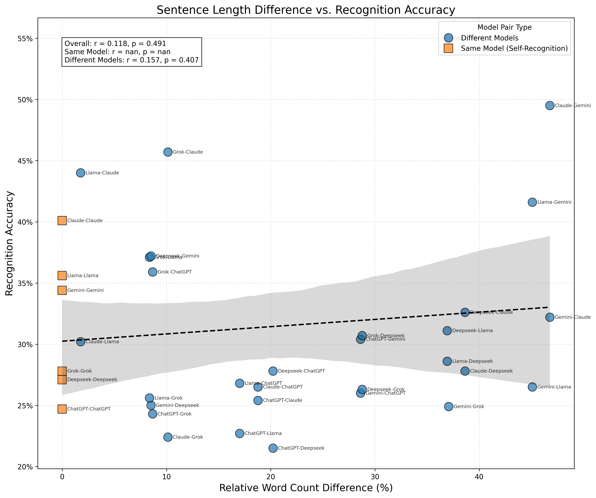
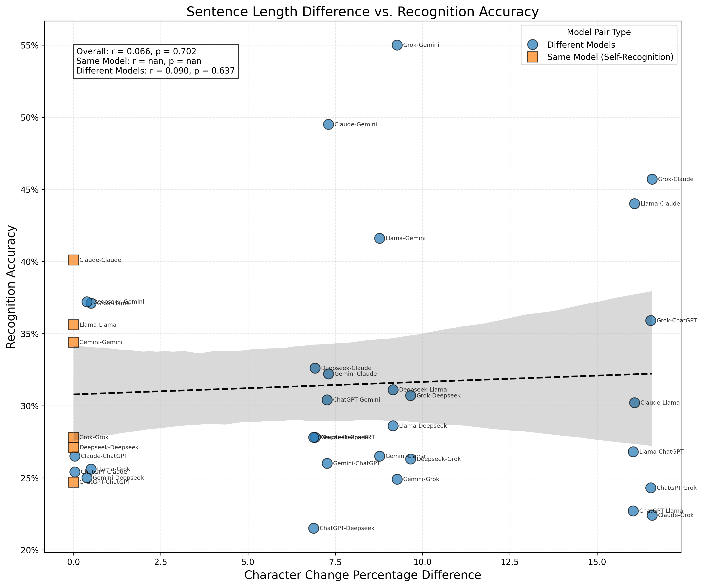
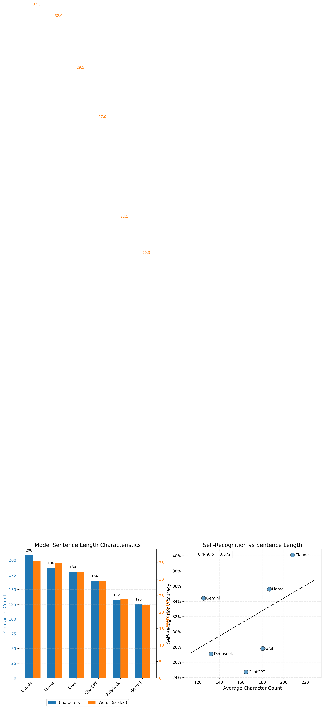

Sentence Length vs Recognition Accuracy Analysis
Analysis Summary
This analysis explores the relationship between sentence length differences and recognition accuracy across 6 language models.
- Models analyzed: ChatGPT, Claude, Grok, Gemini, Llama, Deepseek
- Total model pairs: 36
- Average self-recognition accuracy: 31.6%
Key Findings
The analysis investigated whether differences in sentence length patterns between models correlate with recognition accuracy:
Correlation Results
| Metric |
Correlation (r) |
p-value |
Significance |
Interpretation |
| Character Count Difference |
0.150 |
0.383 |
ns |
Weak correlation (positive) |
| Word Count Difference |
0.110 |
0.521 |
ns |
Weak correlation (positive) |
| Relative Character Difference (%) |
0.145 |
0.398 |
ns |
Weak correlation (positive) |
| Relative Word Difference (%) |
0.118 |
0.491 |
ns |
Weak correlation (positive) |
| Character Change % Difference |
0.066 |
0.702 |
ns |
No meaningful correlation |
Visualizations
Character Count Difference vs. Recognition Accuracy

Word Count Difference vs. Recognition Accuracy

Relative Character Difference (%) vs. Recognition Accuracy

Relative Word Difference (%) vs. Recognition Accuracy

Character Change % Difference vs. Recognition Accuracy

Model Characteristics Summary

Methodology
This analysis combined two datasets:
- Sentence length statistics: Character and word counts for sentences generated by each model
- Recognition accuracy data: How well each model recognizes its own vs. other models' outputs
For each pair of models, we calculated:
- Absolute differences in average character and word counts
- Relative differences (as percentages) in sentence length metrics
- Correlation between these differences and recognition accuracy
Conclusions
Based on the correlation analysis, we can make the following conclusions about the relationship between sentence length differences and recognition accuracy:
- No statistically significant correlation was found between sentence length differences and recognition accuracy.
- This suggests that models may be using other features beyond sentence length to recognize their own vs. others' outputs.